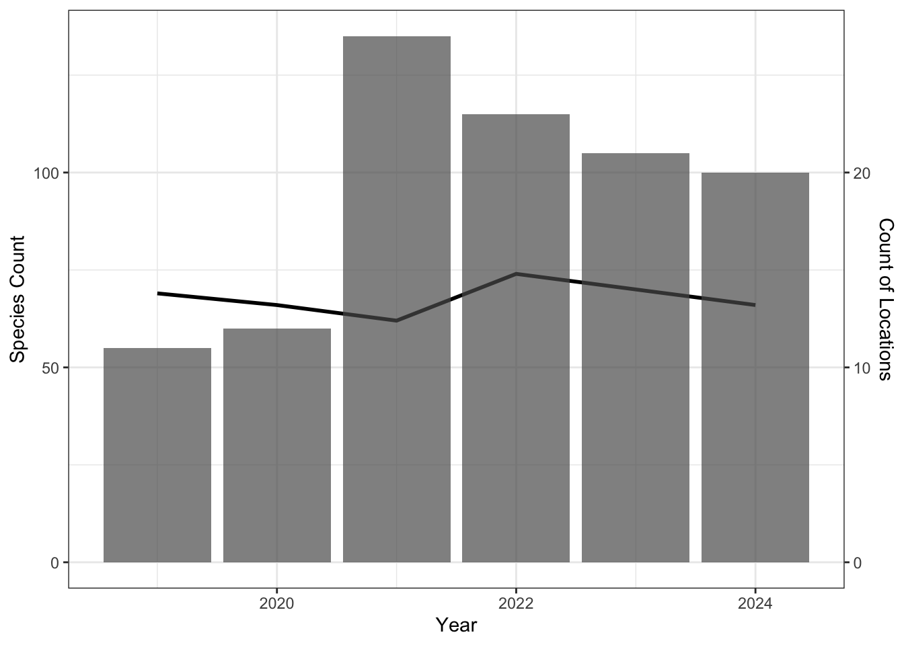
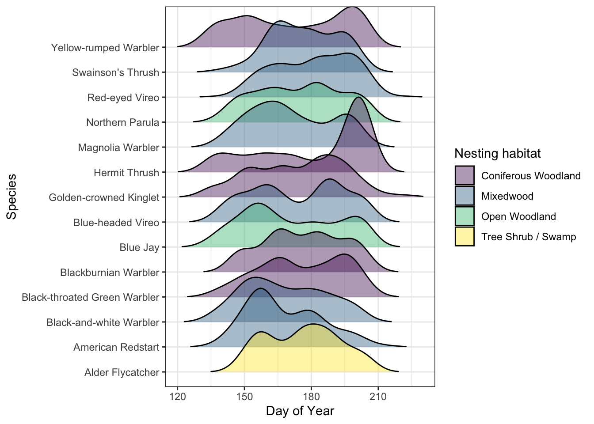
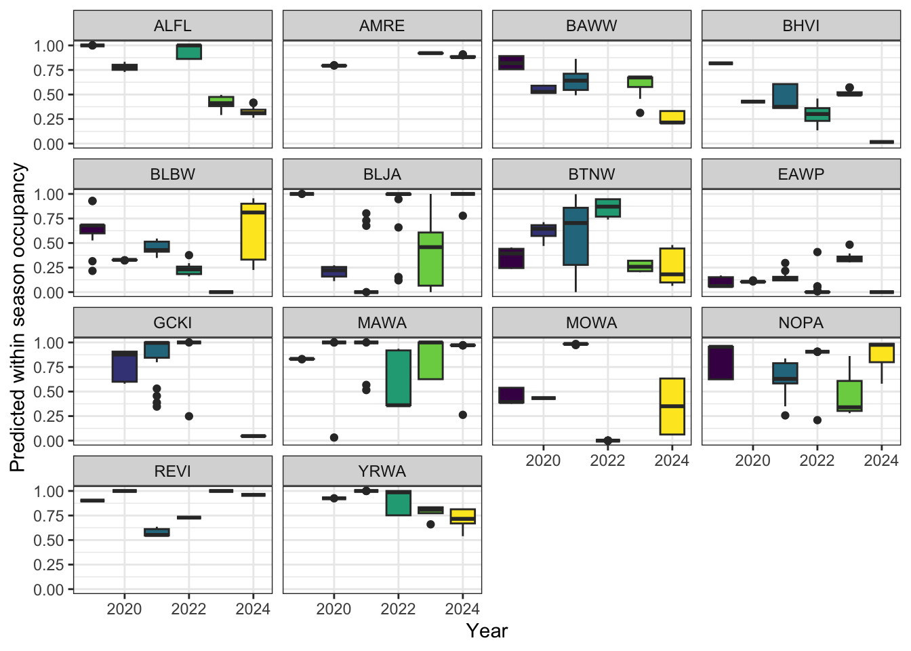

| Location | 2019 | 2020 | 2021 | 2022 | 2023 | Site |
|---|---|---|---|---|---|---|
| PENP-1-1 | 1 | 1 | 1 | 1 | 1 | Cavendish |
| PENP-1-2 | 1 | 1 | 1 | 1 | 1 | Cavendish |
| PENP-1-3 | 1 | 0 | 1 | 1 | 0 | Cavendish |
| PENP-2-3 | 1 | 1 | 1 | 1 | 1 | Brackley |
| PENP-3-1 | 1 | 1 | 1 | 1 | 1 | Dalvay |
| PENP-3-2 | 1 | 1 | 1 | 1 | 1 | Dalvay |
| PENP-3-4 | 1 | 0 | 1 | 1 | 1 | Dalvay |
| PENP-4-1 | 1 | 1 | 1 | 1 | 1 | Greenwich |
| PENP-4-2 | 1 | 1 | 1 | 1 | 1 | Greenwich |
| PENP-4-3 | 1 | 1 | 1 | 1 | 1 | Greenwich |
| PENP-4-4 | 1 | 1 | 1 | 1 | 1 | Greenwich |
| PENP-1-4 | 0 | 1 | 1 | 1 | 1 | Cavendish |
| PENP-3-5 | 0 | 1 | 1 | 1 | 1 | Dalvay |
| PENP-3-6 | 0 | 1 | 1 | 1 | 1 | Dalvay |
| ASC-1 | 0 | 0 | 1 | 0 | 0 | Communities |
| LXI-1 | 0 | 0 | 1 | 0 | 0 | Communities |
| PENP-1-5 | 0 | 0 | 1 | 1 | 1 | Cavendish |
| PENP-1-6 | 0 | 0 | 1 | 1 | 1 | Cavendish |
| PENP-3-7 | 0 | 0 | 1 | 1 | 1 | Dalvay |
| PENP-3-8 | 0 | 0 | 1 | 1 | 1 | Dalvay |
| PENP-4-6 | 0 | 0 | 1 | 1 | 1 | Greenwich |
| PENP-5-1 | 0 | 0 | 1 | 1 | 1 | Skmaqn |
| PENP-BS-1 | 0 | 0 | 1 | 0 | 0 | Bank Swallow Monitoring |
| PENP-BS-2 | 0 | 0 | 1 | 0 | 0 | Bank Swallow Monitoring |
| PENP-BS-3 | 0 | 0 | 1 | 0 | 0 | Bank Swallow Monitoring |
| PENP-BS-4 | 0 | 0 | 1 | 0 | 0 | Bank Swallow Monitoring |
| PENP-BS-5 | 0 | 0 | 1 | 0 | 0 | Bank Swallow Monitoring |
| PENP-4-5 | 0 | 0 | 0 | 1 | 1 | Greenwich |
| PENP-E1 | 0 | 0 | 0 | 1 | 0 | Skmaqn |
| PENP-BS-6 | 0 | 0 | 0 | 0 | 1 | Bank Swallow Monitoring |
Report on the use of passive acoustic monitoring for evaluating ecological integrity in Prince Edward Island National Park

To run this report locally:
- Open RStudio or your preferred IDE
- Create a new project and set up for version control using the GitHub repository
- Pull from remote main
- Load the
pei.RDatafile in the first chunk - Render the document and review the results
Abstract
This study spans five years and surveys 30 locations in Prince Edward Island to assess avian species distribution. A total of 100 avian species were identified. Despite stable species richness and diversity, variations in species occupancy were noted, attributed to the limited sample size. The study recommends consistent monitoring at core sites during the breeding season, emphasizing the importance of well-maintained acoustic equipment. The potential for extending acoustic monitoring to other taxa, such as amphibians, is also discussed for a more comprehensive ecological evaluation.
Introduction
Human activities have been identified as key contributors to the global decline in forest wildlife. The repercussions of habitat fragmentation and loss, climate change, and increased access to sensitive areas exert direct and indirect pressures on forest biodiversity, particularly in managed regions.
In 2019, Prince Edward Island National Park initiated a program incorporating autonomous recording units (ARUs) for passive acoustic monitoring (PAM) of the Park’s wildlife. ARUs are compact environmental sensors that are designed to passively record the environment (Shonfield and Bayne (2017)), capturing vocalizing species like birds and amphibians. This technology enables resource managers to conduct prolonged surveys with minimal human interference. The species detected by these units contribute valuable information to ecological integrity metrics such as species richness, diversity, occupancy, and trends over time. This data aids decision-making and management within the Park. Given the rapid and ease of accumulating data from these units, maintaining a high standard of data integrity is paramount to ensure future data interoperability and sharing (Shonfield and Bayne (2017)). WildTrax is an online platform developed by the Alberta Biodiversity Monitoring Institute (ABMI) for users of environmental sensors to help addresses these big data challenges by providing solutions to standardize, harmonize, and share data.
Shonfield, Julia, and Erin M Bayne. 2017. “Autonomous Recording Units in Avian Ecological Research: Current Use and Future Applications.” Avian Conservation & Ecology 12 (1).
The objectives of this report are to:
- Describe the data management and processing procedures for the acoustic data collected from 2019 to 2023
- Identify all audible species and quantify the abundance of each species within each recording
- Utilize traditional human tagging, visual scanning and automated recognition techniques to detect species on audio recordings
- Define straightforward methods and robust ecological integrity metrics for evaluating species presence, species richness, and species occupancy over time at various locations
- Offer recommendations for ongoing monitoring approaches to contribute to the assessment of ecological integrity in forest ecosystems
- Facilitate data publication to the public, resource managers, academic institutions, and other relevant agencies
Methods
Data collection
Data were collected during the spring and summer seasons from 2019 to 2023. A total of 30 locations were surveyed over the five-year period:
- 21 locations as part of the forest songbird monitoring program (code:
PENP-*) with ARUs recording during the morning hours, - 6 for Bank Swallow Monitoring (code:
PENP-BS-*) with ARUs placed strategically beside ponds recording in the evening, - 2 locations deployed in First Nations communities (
ASC-1, LXI-1) to complement the forest songbird and evening schedules, - And one location (
PENP-E1), which was to examine the effects of a single public event
Locations were surveyed on rotation with 9 locations (PENP-1-1, PENP-1-2, PENP-2-3, PENP-3-1, PENP-3-2, PENP-4-1, PENP-4-2, PENP-4-3, PENP-4-4) were surveyed each year. A detailed list of all survey years can be found in Table 1 (Table 1) and illustrated in Figure 1 (Figure 1). ARUs were deployed at the beginning of the breeding season in April and May and rotated locations until their final retrieval in July and August. At the forest songbird locations (PENP-*), the ARUs were set to record for 30 minutes continuously every hour for four hours, starting one hour before dawn and ending three hours after dawn. For Bank Swallow Monitoring locations (PENP-BS), recordings were made every 5 minutes for a duration of 3 minutes each from 1.5 hours before dusk to 1.5 hours after dusk. On average, each ARU recorded for 11.27 +/- 8.03 days.

Data management
A total of 10078 recordings were collected (see Figure 3). From 2019 - 2021, data were transferred via hard drive to the University of Alberta in Edmonton, where they are redundantly stored on a server known as Cirrus. The recordings were standardized to ensure adherence to the naming convention of LOCATION_DATETIME, such as PENP-1-1_20230625_053500.wav. The remaining recordings (2022 - 2023) were directly uploaded to WildTrax by Parks Canada staff and can be downloaded from the platform’s Recording tab, accessible under Manage > Download list of recordings (see Figure 2).


Community data processing
The principal goal for data processing was to describe the acoustic community of species heard at locations while choosing a large enough subset of recordings for analyses. To ensure balanced replication, for each location and year surveyed, four randomly selected recordings were processed for 3-minutes between the hours of 4:00 AM - 7:59 AM ideally on four separate dates (see Table 2). Four recordings will ensure that we have the minimum number of samples for a simple occupancy analysis (MacKenzie, Nichols, Lachman, et al. (n.d.) and MacKenzie, Nichols, Hines, et al. (n.d.)). Tags are made using count-removal (Sólymos et al. (2018)) where tags are only made at the time of first detection of each individual heard on the recordings. In case a species was overly abundant a TMTT (‘too many to tag’) flag was used (see Table 4). We also verified that all tags that were created were checked by a second observer to ensure accuracy of detections (see Table 3). Amphibian abundance was estimated at the time of first detection using the North American Amphibian Monitoring Program with abundance of species being estimated on the scale of “calling intensity index” of 1 - 3. Mammals such as Red Squirrel, were also noted on the recordings.
MacKenzie, Darryl I., James D. Nichols, Gideon B. Lachman, Sam Droege, J. Andrew Royle, and Catherine A. Langtimm. n.d. “Estimating Site Occupancy Rates When Detection Probabilities Are Less Than One.” Ecology 83 (8): 2248–55. https://doi.org/https://doi.org/10.1890/0012-9658(2002)083[2248:ESORWD]2.0.CO;2.
MacKenzie, Darryl I., James D. Nichols, James E. Hines, Melinda G. Knutson, and Alan B. Franklin. n.d. “Estimating Site Occupancy, Colonization, and Local Extinction When a Species Is Detected Imperfectly.” Ecology 84 (8): 2200–2207. https://doi.org/https://doi.org/10.1890/02-3090.
Sólymos, Péter, Steven M. Matsuoka, Steven G. Cumming, Diana Stralberg, Patricia Fontaine, Fiona K. A. Schmiegelow, Samantha J. Song, and Erin M. Bayne. 2018. “Evaluating time-removal models for estimating availability of boreal birds during point count surveys: Sample size requirements and model complexity.” The Condor 120 (4): 765–86. https://doi.org/10.1650/CONDOR-18-32.1.
After the data are processed in WildTrax, the wildRtrax package is use to download the data into a standard format prepared for analysis.
| location | year | task_duration | typ | n |
|---|---|---|---|---|
| PENP-1-1 | 2019 | 180s | Dawn | 6 |
| PENP-1-1 | 2019 | 180s | Day | 7 |
| PENP-1-1 | 2020 | 180s | Dawn | 9 |
| PENP-1-1 | 2020 | 180s | Day | 2 |
| PENP-1-1 | 2021 | 180s | Night | 4 |
| PENP-1-1 | 2022 | 180s | Dawn | 4 |
| PENP-1-1 | 2023 | 180s | Dawn | 4 |
| Tag is verified | Count | Proportion |
|---|---|---|
| 168 | 1.65 | |
| f | 2927 | 28.82 |
| t | 7060 | 69.52 |
| location | recording_date_time | species_code | individual_count |
|---|---|---|---|
| PENP-1-1 | 2019-06-01 05:25:00 | AMCR | TMTT |
| PENP-1-1 | 2019-06-01 05:25:00 | AMRE | TMTT |
| PENP-1-1 | 2019-06-02 06:24:00 | YEWA | TMTT |
| PENP-1-1 | 2019-06-02 06:24:00 | AMCR | TMTT |
| PENP-1-1 | 2019-06-02 06:24:00 | AMRE | TMTT |
| PENP-1-1 | 2019-06-04 07:23:00 | AMRE | TMTT |
Visual scanning
Visual scanning is the concept of visually examining spectrograms in order to find a signal within an audio recording. Visual scanning can be a useful processing method allowing trained users to process recordings much faster than traditional listening. It has been used for detecting different taxa (Cameron et al. (2020), Garland et al. (2020)) with comparable biological metrics, as well as helping to maximize species detection in large acoustic monitoring data sets (Ware et al. (2023)). WildTrax’s project settings and dynamic spectrogram settings in the processing interface allow users to upload many recordings, while also allowing frequency-limited or time-limited spectrograms. These changes are easily made by adjusting project settings in WildTrax.
Cameron, J., A. Crosby, C. Paszkowski, and E. Bayne. 2020. “Visual Spectrogram Scanning Paired with an Observation–Confirmation Occupancy Model Improves the Efficiency and Accuracy of Bioacoustic Anuran Data.” Canadian Journal of Zoology 98 (11): 733–42. https://doi.org/10.1139/cjz-2020-0103.
Garland, Laura, Andrew Crosby, Richard Hedley, Stan Boutin, and Erin Bayne. 2020. “Acoustic Vs. Photographic Monitoring of Gray Wolves (Canis lupus): A Methodological Comparison of Two Passive Monitoring Techniques.” Canadian Journal of Zoology 98 (3): 219–28. https://doi.org/10.1139/cjz-2019-0081.
Ware, Lena, C. Lisa Mahon, Logan McLeod, and Jean-François Jetté. 2023. “Artificial Intelligence (BirdNET) Supplements Manual Methods to Maximize Bird Species Richness from Acoustic Data Sets Generated from Regional Monitoring.” Canadian Journal of Zoology 101 (12): 1031–51. https://doi.org/10.1139/cjz-2023-0044.
In order to determine presence of Bank Swallow (BANS) at PENP-BS-* site, visual scanning was employed to identify the time of first detection of the species on recordings at these locations. A total of 65 recordings were visually scanned for BANS. Tags were made at the time of first detection in each minute interval.
Automated recognition
Automated recognition is a well-known process to help detect rare and elusive species (@), species that may have low detectability in large data sets (@). We constructed a recognizer for EAWP and used three previously constructed Wildlife Acoustics SongScope recognizer for OSFL, RUBL and CAWA. Hits were uploaded to WildTrax via the wt_songscope_tags function in wildRtrax.
wt_songscope_tags()Results
Avian species
Species richness
A total of 100 species were found across the five years. Figure 4 describes the relationship of species richness across each location and survey year with Figure 5 showing the relationship between species richness and survey effort.



A quick test to show proximity to ocean is the major effect of noise and species richness on audio data so that we can use that site covariate in the occupany models.
Species diversity
Species occupancy
For testing species occupancy, we selected locations with a minimum of four dawn visits across all five years, focusing on forest obligate species for ecological relevance (see ?@tbl-bird-guilds). Utilizing a single-season single-species occupancy model (see Figure 7) from Mackenzie et al. 2003. Site-specific covariates included the distance to the ocean edge and the proportion of forested area surrounding the ARU. Observation covariates incorporated day of the year, hour, observer details, and a quadratic term for both year and hour. Despite variations in methodology between 2019 (1SPM) and subsequent years (2020 - 2023), we maintained consistency by exclusively utilizing the time to the first detection of individuals from the 1SPM recordings. Model predictions were then generated, and the best model was selected based on the Aikaike Information Criterion (AIC).
[1] "REVI" "AMRE" "BTNW" "NOPA" "MAWA" "SWTH" "ALFL" "YRWA" "BAWW" "BHVI"
[11] "BLJA" "CHSP" "BTBW" "BLBW" "GCKI" "MOWA" "HETH" "CSWA" "EAWP" "YBSA"
Visual scanning
BANS were detected at
pei_main |>
filter(species_code == "BANS") |>
select(location, recording_date_time, species_code, individual_order, individual_count) |>
distinct() location recording_date_time species_code individual_order individual_count
1 PENP-BS-6 2023-07-16 06:14:00 BANS 1 1
2 PENP-BS-6 2023-07-19 05:17:00 BANS 1 1Amphibians